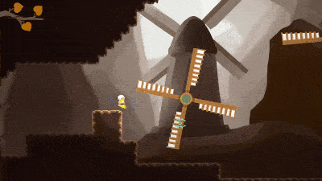
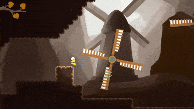

About IO
IO is an 2D Action/Adventure game with challenging combat and weapon teleportation as a central mechanic. You step into the shoes of a young girl venturing into an ancient abyss, discovering the secrets of a lost civilization.
Development Details
- Studio: WolverineSoft
- Development Cycle: 3 months w/ Agile Development
- Team: 57 Developers as a whole; 7 on the Enemies Team
- Engine: Unity
- Programming Language: C#